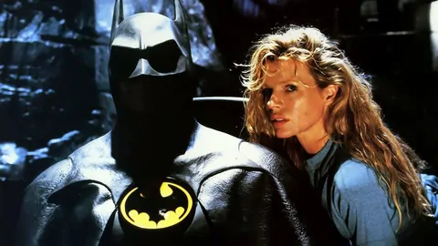

Майкл Кітон
Роль: Брюс Вейн / Бетмен
Фільм "Бетмен" (англ.Batman) знятий на основі одного з найпопулярніших в Америці коміксів. Головний герой Бетмен ховається під маскою летючої миші, одягнений в куленепробивний жилет і володіє супермашиною - Бетмобілем. Сюжетна лінія коміксів - боротьба добра зі злом, відповідає найкращим традиціям даного виду мистецтва. Коли Брюс Вейн був ще хлопчиком, на його очах розігралася страшна трагедія, він став очевидцем смерті власних батьків. Їх безжально вбили на вулиці міста Готем при спробі пограбування. Все небезпечніше ставало місто, все частіше жителі міста піддавалися насильству і грабежам. Здавалося б у Готема немає майбутнього, але в найважчий для жителів час з'являється захисник. Гроза злочинного світу, загадковий герой в костюмі кажана - «Бетмен», стає на захист мирних громадян. Хто ж насправді ця таємнича особистість, хто ховає своє обличчя за маскою супергероя, цю таємницю намагаються розкрити репортер Нокс і журналістка Вікі Вейл. Однак зло не дрімає і ось черговий злочинець, намагаючись сховатися від копів, потрапив в чан з хімікатами, так з'явився Джокер, страшний сон для міста Готем. Чи зможе Бетмен протистояти великому злу або жителі міста приречені ...
Майкл Кітон
Роль: Брюс Вейн / Бетмен

Джек Ніколсон
Роль: Джокер / Джек Нейпір

Кім Бейсінгер
Роль: Вікі Вейл

Пет Хінгл
Роль: Джеймс Гордон

Трейсі Вальтер
Роль: Боб

Роберт Вул
Роль: Александр Нокс